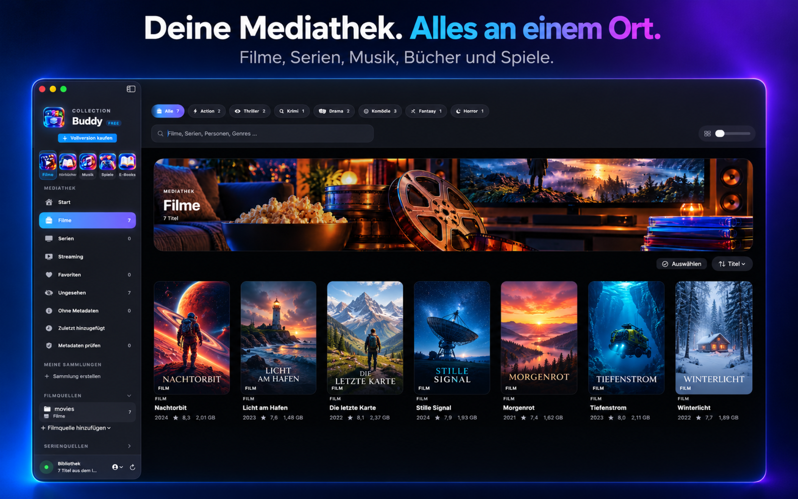
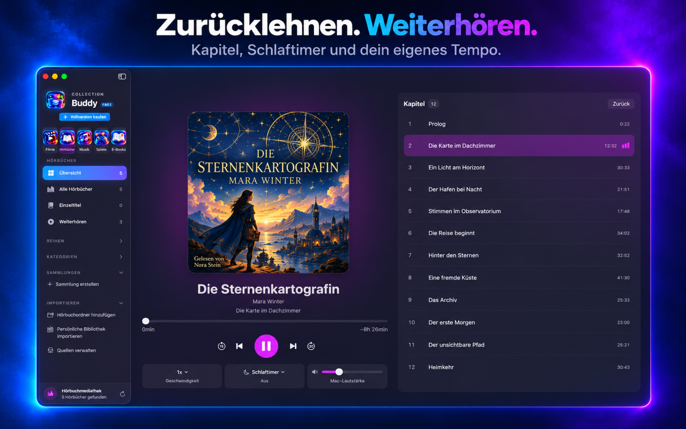
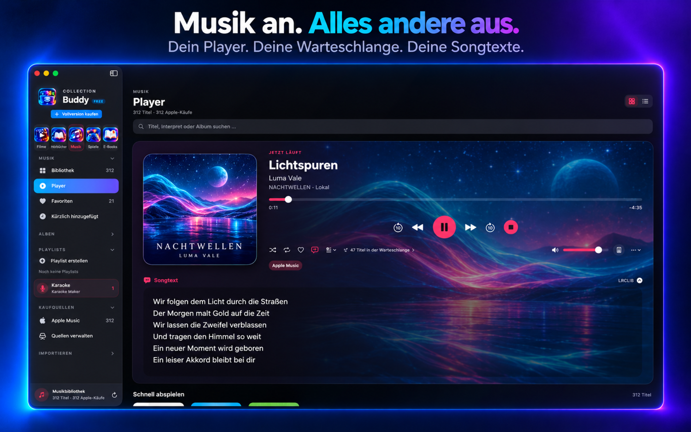
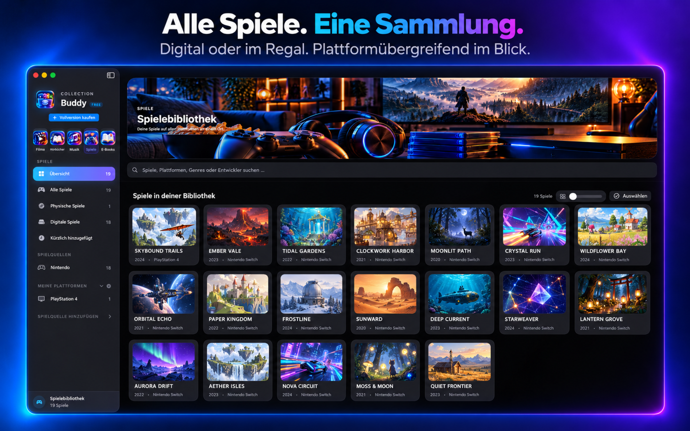
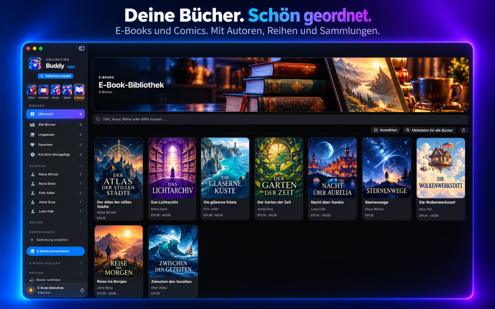
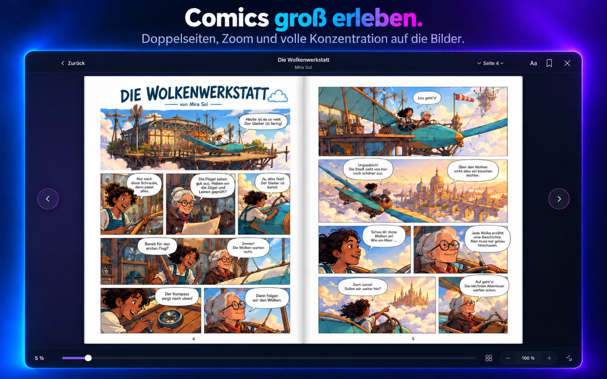

Bibliothek & Metadaten
Filme, Staffeln und Episoden organisieren, lokale NFO-Dateien und Bilder berücksichtigen, Zuordnungen prüfen sowie Poster, Beschreibungen, Besetzung, Bewertungen und Altersfreigaben ergänzen.
Eine App für deine gesamte Sammlung
Filme, Serien, Hörbücher, Musik, Karaoke, Spiele, E-Books und Comics: Collection Buddy bringt deine persönlichen Bibliotheken, Dateien und unterstützten Dienste in einer übersichtlichen Mac-App zusammen.
Auch fürs iPhone: Collection Buddy Companion

Deine Medien. Deine Bereiche.
Jeder Medientyp erhält den passenden Platz: mit eigener Organisation, Suche, Fortschritt und den Werkzeugen, die du dort wirklich brauchst.
Collection Buddy baut aus deinen Filmen und Serien eine übersichtliche Mediathek – mit Staffeln, Episoden, Metadaten, Sammlungen und einem leistungsfähigen Player.
Filme, Staffeln und Episoden organisieren, lokale NFO-Dateien und Bilder berücksichtigen, Zuordnungen prüfen sowie Poster, Beschreibungen, Besetzung, Bewertungen und Altersfreigaben ergänzen.
Lokale Videos und kompatible Serverinhalte direkt abspielen – mit Kapiteln, Tonspuren, Geschwindigkeit, Mini-Player, Vollbild, Wiedergabeschlange, externen Bildschirmen und AirPlay.
Vorhandene oder externe Untertitel laden, Treffer online suchen, Sprachen und Releases vergleichen sowie Größe und Zeitversatz während der Wiedergabe anpassen.
Favoriten, Gesehen-Status, Wiedergabefortschritt, zuletzt hinzugefügte Titel und „Weiterschauen“ bringen dich ohne Umwege zurück zum richtigen Film oder zur nächsten Episode.
Eigene Hörbuchordner werden zu einer Bibliothek mit Autoren, Reihen, Kategorien, Kapiteln und gespeichertem Hörfortschritt.

Lokale Musik und deine persönliche Apple-Musikbibliothek finden in einer gemeinsamen, durchsuchbaren Bibliothek zusammen.

Erstelle aus geeigneten lokalen Audiodateien eigene Karaoke-Fassungen und öffne sie direkt im Karaoke-Player.
Digitale und physische Spiele werden plattformübergreifend organisiert – mit Quellen, Plattformen, Metadaten und passenden Hilfen direkt am Titel.

E-Books und Comics erhalten eine eigene Bibliothek, einen passenden Reader sowie Werkzeuge für Metadaten, Konvertierung und verbundene Lesegeräte.


EPUB, PDF, MOBI, AZW3, CBZ und CBR erkennen, mehrere Formate gemeinsam verwalten, Autoren, Reihen, ISBN, Favoriten und Sammlungen pflegen sowie Metadaten aus Dateien oder Online-Treffern übernehmen.
E-Books und Comics direkt lesen – mit Einzel- oder Doppelseiten, Kapiteln, Lesezeichen, Schriftoptionen, Zoom, Vollbild, Seitenzahlen und gespeichertem Lesefortschritt.
Unterstützte DRM-freie Formate in EPUB umwandeln, Reader-Profile für Kindle, Kobo, Tolino, PocketBook und andere Ziele verwalten sowie passende Dateien übertragen, einlesen oder entfernen.
Textbücher und Comics unterscheiden, Kapitel und Seitenzahlen ermitteln, vorhandene ComicInfo-Daten berücksichtigen, unbrauchbare Erzeugerangaben ausfiltern und bestätigte Korrekturen schützen.
Danach kommt der Komfort
Collection Buddy verbindet vorhandene Dateien, Laufwerke, Server und persönliche Kaufbibliotheken, ohne deine Ablage unnötig umzubauen.
Lokale Ordner, externe Laufwerke und bereits verbundene Netzwerkfreigaben einlesen, Unterordner berücksichtigen und Quellen gezielt aktualisieren.
Eigene Medienserver verbinden und kompatible Inhalte zusammen mit lokalen Medien in Collection Buddy verwalten.
Unterstützte Kaufinformationen aus Apple TV, Prime Video, Audible und Apple Music nach deiner bewussten Freigabe einlesen.
Physische Filme und Spiele per EAN oder UPC mit der Mac-Kamera oder der ergänzenden Collection Buddy Scanner App für iPhone und iPad erfassen.
Import-, Such-, Analyse- und Verarbeitungsvorgänge nachvollziehen, während aufwendige Arbeiten kontrolliert im Hintergrund laufen.
Das Entfernen einer Quelle oder eines Eintrags ist vom Löschen deiner Originaldateien getrennt. Collection Buddy kopiert keine geschützten Videodateien und umgeht kein DRM.
Sammlungen, Favoriten und Fortschrittsstände passen sich dem jeweiligen Medienbereich an. Profile halten persönliche Zustände getrennt.
Datenschutz mit klaren Grenzen
Film-, Musik- und Buchdateien werden nicht auf Server von JSPixelcraft hochgeladen.
Server-Zugangsdaten und geschützte Angaben liegen im macOS-Schlüsselbund.
Unterstützte Bibliotheks- und Profildaten werden nur optional über deinen eigenen iCloud-Account synchronisiert.
Gespeicherte Websitedaten unterstützter Dienste lassen sich verwalten und löschen.
Bibliotheks- und Einstellungsdaten lassen sich sichern, ohne deine eigentlichen Mediendateien in das Backup aufzunehmen.
Analyseergebnisse und Cover werden wiederverwendet; aufwendige Aufträge werden begrenzt und Quellen gezielt aktualisiert.
Kostenlos starten
Collection Buddy startet kostenlos. Die Vollversion entfernt die Grenzen mit einem einmaligen Kauf – ohne Abonnement und ohne automatische Verlängerung.
Collection Buddy liefert keine Filme, Serien, Hörbücher, Musik, E-Books, Comics oder Spiele und enthält keine Streamingabonnements oder Kaufberechtigungen. Die App umgeht weder DRM noch Kopierschutz und kopiert beim Import keine geschützten Prime-Video- oder Apple-TV-Dateien. Verfügbarkeit, Wiedergabe, Lesen, Konvertierung und Karaoke hängen von Formaten, Dateien, Berechtigungen, Accounts, Diensten und regionalen Einschränkungen ab.
Datenquellen & Open Source
Externe Abfragen erfolgen nur für die jeweils genutzte Import-, Such-, Zuordnungs- oder Wiedergabefunktion. Die genannten Dienste bleiben eigenständige Anbieter.
Lokale NFO-Dateien und Bilder, Cinemeta/Stremio, TVmaze, omdb.org (CC BY 2.0 DE), Wikidata und RAWG.
KinoCheck für gestartete Trailersuchen und das OpenSubtitles-Community-Addon für gestartete Untertitelsuchen.
EasyList und EasyPrivacy unter CC BY-SA 3.0 – optional und ausschließlich für selbst hinzugefügte Streaming-Websites.
VLCKit und libVLC, lizenziert unter der GNU LGPL 2.1.
Collection Buddy ist ein unabhängiges Produkt. Genannte Marken, Dienste und Logos gehören ihren jeweiligen Eigentümern. Eine Nennung bedeutet keine Partnerschaft oder Billigung.